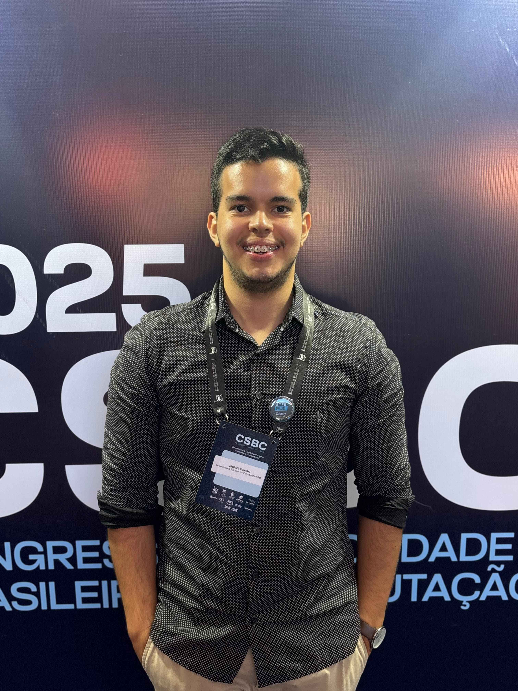

Fundador & CFO · Ativo
Connecta CI
Fundei em 2025 para fechar a distância entre o Centro de Informática e o mercado. Defini a estrutura financeira desde o zero: orçamento, alocação de recursos e a estratégia que sustenta a operação.
Founder & builder · CFO da Connecta CI · Ciência da Computação @ UFPB
Fundo e construo coisas. Comecei aos 17 com um negócio próprio de educação, hoje sou fundador e CFO da Connecta CI e conduzo uma plataforma institucional na UFPB. No meio disso, escrevo o código: sistemas de decisão em Prolog, ferramentas financeiras em Python. Meu histórico não é de quem estudou o problema — é de quem colocou algo de pé.

Não são cadeiras cursadas nem cargos herdados: são organizações que existem hoje porque alguém decidiu começar.
Fundei em 2025 para fechar a distância entre o Centro de Informática e o mercado. Defini a estrutura financeira desde o zero: orçamento, alocação de recursos e a estratégia que sustenta a operação.
Meu primeiro negócio, aberto aos 17 anos. Montei o time, a operação e o modelo financeiro de uma assessoria educacional online que já preparou mais de 100 estudantes para o vestibular.
Conduzo requisitos e arquitetura de backend da plataforma de integração do Centro de Informática. Produto institucional real, com usuários reais e prazo real.
Abri meu primeiro negócio aos 17 anos, antes de entrar na universidade. Desde então o padrão se repete: identifico uma lacuna, monto o time, defino o modelo financeiro e opero. Foi assim com a Ajuda Enem e é assim com a Connecta CI, que fundei para aproximar o Centro de Informática do mercado.
A parte técnica não é separada disso — é o que me deixa construir sozinho quando preciso. Escrevo Python, C, Java e Prolog; publiquei no Workshop Brasileiro de Lógica um sistema de predição que projetei do zero; e hoje conduzo requisitos e arquitetura de backend de uma plataforma institucional na UFPB.
A universidade entra como base, não como identidade: CRA 9,044/10,0, monitoria de Lógica Aplicada com mais de 100 alunos e pesquisa no PET-Computação. O que me define, no fim, é a disposição de começar algo antes de ter todas as respostas — e a próxima coisa que vou fundar.
A sequência completa, do primeiro negócio aos 17 anos até hoje.
Conduzo o levantamento de requisitos e a arquitetura de backend da Aquário, plataforma de integração da UFPB.
Fundei a organização para aproximar universidade, mercado e sociedade. Dirijo estratégia financeira, orçamento e alocação de recursos.
Apoiei mais de 100 estudantes e orientei projetos em Prolog, com foco em tornar conceitos lógicos abstratos utilizáveis na prática.
Pesquisa, organização de eventos e comunicação. Coautor de trabalho apresentado no ENEPET 2025 sobre internacionalização acadêmica.
Criei aos 17 anos um serviço online de assessoria educacional, liderando o time e a gestão financeira no apoio a candidatos ao vestibular.
Projetos que saíram do exercício acadêmico e viraram sistema publicado ou ferramenta em uso.

Sistema de análise estatística e predição aplicada a apostas esportivas. A lógica central, escrita em Prolog, foi publicada no Workshop Brasileiro de Lógica 2025.

Aplicação web que simplifica a consulta e o cálculo de índices financeiros brasileiros, integrando APIs públicas para apoiar decisões de investimento.
CRA 9,044/10,0 — atualmente no 7º período.
Disciplinas relevantes: Estruturas de Dados, Lógica Aplicada, Inteligência Artificial, Pesquisa Operacional, Probabilidade e Estatística.
Procuro sócios, projetos e oportunidades onde dê para começar do zero — ventures, produto ou pesquisa aplicada. Respondo rápido.